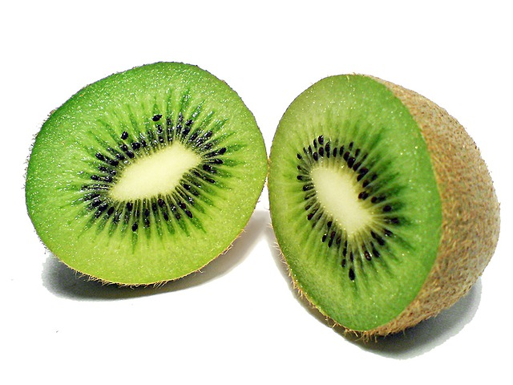

Watermelon

A watermelon is a type of edible fruit, they are 92% water. About 6% of a watermelon is sugar, which makes it very sweet...
More Info...Banana

Banana fruits are healthy, colorful and are easy to eat. The banana fruit comes from a tropical herbaceous plant...
More Info...Orange

The orange is the fruit of the citrus species Citrus × sinensis in the family Rutaceae. Orange trees are widely grow...
More Info...Apple

An apple is a sweet, edible fruit produced by an apple tree (Malus pumila). Apple trees are cultivated worldwide, and are the...
More Info...Kiwi
Kiwis are small fruits that pack a lot of flavor and plenty of health benefits. Their green flesh is sweet and tangy...
More Info...Mango
Mangoes are juicy stone fruit (drupe) from numerous species of tropical trees belonging to the flowering plant...
More Info...Pineapple
The pineapple (Ananas comosus) is a tropical plant with an edible multiple fruit consisting of coalesced berries...
More Info...Cherries

The cherry fruits of commerce usually are obtained from cultivars of a limited number of species such as the sweet cherry...
More Info...Strawberries

The garden strawberry (or simply strawberry) is a widely grown hybrid species of the genus Fragaria...
More Info...